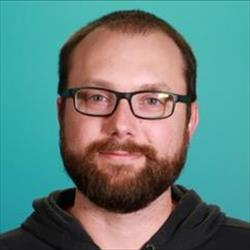

About me

I'm a backend developer at
Degreed
who focuses on developer experience and our DevOps transformation. I am
passionate about making dev work more enjoyable by making things easier to
use and faster to set up, change, and deploy.
I live in the Finger Lakes region of New York where I spend the summers
playing golf and enjoying all there is to do in the northeast and the
winters skiing around New York, Vermont, and the west.
Preferred tools
-
C# | .NET Core/5/6 and ASP.NET Core | Docker | Kubernetes/AKS | SQL Server
| Redis | PostgreSQL | Entity Framework | Terraform | Github Actions |
Azure Pipelines | Datadog | Jetbrains IDEs and performance tools
Other daily drivers
-
IIS | Azure App Service, Web jobs, Service Bus | .NET Framework | ASP.NET
MVC
Tech I've used at other jobs
- Angular | RavenDB | AWS EC2, Elastic Beanstalk
Degreed - Staff Engineer I - March 2022 - present
Degreed - Backend Developer - October 2019 - March 2022
-
DevOps team - May 2020 to present
In early 2020 we identified the need to start a DevOps transformation as
we weren't releasing often enough and had lots of opportunities to
improve developer experience and productivity. Having a dedicated DevOps
team is a bit of an anti-pattern, and the hope is that we will dissolve
when our mission is complete. We want to modernize hosting and
deployments to enable the fast flow that DevOps aims to achieve.
I coordinate directly with the VP of DevSecOps and the architects to
make sure that we are aligned and working together toward our long term
goals of supporting a loosely coupled, global application that can be
hosted in multiple clouds and continuously deployed.
My team also provides SRE support to the rest of the engineering org. We
are responsible for monitoring the health of the core platform and
providing support to teams that need help with specific troubleshooting.
I have developed a solid understanding of debugging systems through the
use of logging, metrics, and APM via Datadog and am skilled at
diagnosing issues and adding new data as needed to make SRE work more
sustainable.
-
2020 - modernizing deployments and monitoring
-
Started containerizing applications and set up initial POC of
running the stack in Kubernetes.
-
Championed and executed migration from self-hosted TeamCity to a
combination of Github Actions and Azure Pipelines.
-
Reduced deployment times from 50-90% by using "build once, deploy
many" and blue-green deployments.
-
Set up monitoring, alerting, and dashboards for all development
and production environments in Datadog. Provide support to teams
desiring to set up their own detailed dashboards and monitoring.
Serve as Datadog SME.
-
Provided tier 2 SRE support as required. Diagnosed, triaged, and
fixed high severity issues with urgency.
-
Developed database automation enabling use of the same tools for
managing local, remote, and production databases. Added fully
automated database pipeline that removed the need for manually
running scripts during releases.
-
2021 - planning for .NET migration and modular monolith
-
Identified and fixed performance issues that resulted in a 50%
reduction in global response times. Cost savings from the change
were nearly $4,000 per month in web server compute costs.
-
Member of architecture guild and subsequent architecture board.
Frequent RFC contributor.
-
Consulted on and supported .NET Framework -> .NET 5/6 migration of
application components.
-
Supported horizontal scale effort through automation and back-end
code contribution. Added ability to deploy schema changes to an
arbitrary number of databases defined in Cosmos DB documents.
-
Refreshed database automation from Powershell to C# to support the
ability to more easily consume .NET APIs and be highly tested.
-
Participated in planning for modularizing the monolith and
building event-driven architecture.
-
Explored and recommended approaches to improve database
deployments by leveraging backwards compatible changes.
-
Designed, implemented, and educated peers on new integration
testing framework to allow Entity Framework code changes for .NET
migration to be highly tested.
-
2022 - broad improvements to developer experience, promoted to Staff
engineer for contributions to long term improvements and leadership
-
Constantly searched for and made changes to improve the speed of
deployments, tests, and PR checks to allow developers to spend
less time waiting and more time doing.
-
Implemented hosting and deployment patterns that enabled
continuous delivery in new services using Kubernetes, Docker,
Github Actions, and Terraform. Train teams on how to build,
operate, and maintain CD pipelines and implement applications
using patterns that are compatible with CD like backwards
compatibility and versioning.
-
Guided migration of primary application hosting from the
deprecated Azure Cloud Services to the more modern Azure App
Services. This required extensive optimization of network
chattiness as App Services were a bit more resource constrained.
Specifically this included optimizing the way the app uses Redis.
I implemented a layered caching strategy using Redis pub/sub and
in-memory caching to reduce the amount of Redis calls by 50%. This
improved latency of the web requests by nearly 50%.
-
Supported a dozen product teams as they create and deploy new
software components. Educated on building pipelines, automated
test suites, and monitoring and logging. Provided containerized
development environments for all new services.
- Automated deployment of Elasticsearch changes.
-
Automated creation of SQL Server container whenever database
changes were merged. This container is used for local integration
and acceptance testing of database or Entity Framework code
changes. Additionally this container is used in PR checks to speed
them up when there are no database changes. Rather than building
the database from scratch we can reuse the existing image to run
tests against.
-
2023 - improving local development and speed of innovation
-
Improved local monitoring for Redis with MiniProfiler to detect
duplicate calls. Set up Seq to improve the local logging
experience.
-
Participated in migration of Elasticsearch hosting from VMs to
Kubernetes using Elastic Cloud on Kubernetes. Set up monitoring
and automated deployments for dozens of ECK clusters.
-
Reduced provisioning time for new services from days to hours by
creating reusable Github workflows, Helm charts, template
repositories, and Nuget packages. Lead training sessions on use of
these tools to empower teams to own their deployments and
configuration.
-
Researched and implemented managed workload identity to allow
applications to access infrastructure without needing to use
secrets. No more secret rotation or manual configuration changes!
-
Continued to advocate for and demonstrate automated testing and
TDD to allow increased speed and innovation while ensuring high
quality output.
-
Simplified management of local development environments with
Docker Compose for running and managing all infrastructure
dependencies. This includes Redis, Elasticsearch, SQL Server, and
a custom messaging solution to allow the two data stores to stay
in sync using the existing code and infrastructure. Provide
automated tooling to set up and maintain local environments
whenever new changes are submitted that affect the data or
schemas. Produce and execute training and provide support for the
roll out of the improved local development experience.
-
Designed overall modernization of development and deployment
practices, mainly consisting of deploying more parts of the system
from version control instead of synchronizing from a shared
development environment. Removed cumbersome manual steps from
various processes including database and localization deployments.
-
Architecture team - October 2019 to May 2020
- Planned for .NET Framework -> .NET 5 migrations.
-
Participated in beginning of large-scale database schema refactoring.
Relias - Senior Software Engineer - March 2018 to October 2019
Relias - Software Engineer - March 2017 to March 2018
-
Lead team developing apps in ASP.NET Core + Angular to allow medical
clients to administer pre-hire
assessments
to nurses.
-
Co-lead backend chapter and regularly presented on ways to improve
testability, architecture, and maintainability of our services.
-
Developed initial implementation of message broker strategy to allow dev
teams to communicate with other services asynchronously and reliably. This
strategy was proven in production and quickly reached >100,000 messages
daily.
InspectionXpert - April 2013 to March 2017
-
Maintain and extend more than a half-dozen CAD integrations that automate
data extraction from mechanical documents.
-
Bring a new integrated SaaS product to market that allows quality managers
to have real-time visibility into their quality process. Data previously
extracted from mechanical drawings with other InspectionXpert products can
be uploaded with one click.
-
Learn about CI/CD by setting up Jenkins to build all of our products and
automatically deploy to AWS Elastic Beanstalk and CloudFront.
Extracurricular activities
-
Learning functional programming
- F#
-
Elixir - after being a .NET dev for so long, learning Elixir has been
eye-opening to say the least.
-
Domain driven design, CQRS, and event sourcing
-
I have
various
repositories
in different states of
incompleteness
that implement these patterns. I enjoy tinkering with these ideas
without much sense of purpose other than to be armed with the
knowledge to apply these concepts in my real work.
-
Completed
Udi Dahan's Advanced Distributed Systems Design course.
-
Golf - In a past life I was an aspiring PGA golf professional. I realized
that I'd rather continue golf as a leisure activity and I still attempt to
play good golf. Currently I'm about a 4 handicap once the rust gets
knocked off in the spring.
-
Skiing - I was introduced to skiing on a work trip and fell in love. Since
taking up the sport seriously in 2019 I've had the privilege of skiing
over 100 days here in New York and a few days in Tahoe, Utah, and Vermont.